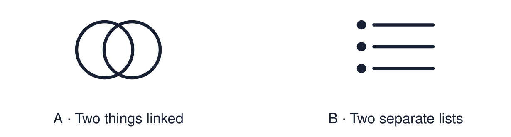

Arrival choices
Previous lesson reminder:

Start with 1 and 2. Try 3 and 4 when ready. Reading and exact scribing are available.
1 Give the strongest similarity between the two responses.
Support: Use the reminder strip or talk it through with an adult.
2 Which meaning fits compare?
Support: Choose: To show similarities and differences OR To say what something is like.
3 Which words show that an answer is comparing?
Support: Use the model evidence anchor B or read one relevant card together.
4 Are two descriptions side by side a comparison?
Support: Give a reason when ready.
Stretch: use a precise example or explain which detail supports your answer.
Evidence cards
Read, point or listen. Keep the source label with any detail you use.
A Describe or compare?
Describe: says what one thing is like. Compare: sets two things side by side using both, however or whereas.
Source: Authored classroom resource
Limit: Good comparisons start from accurate descriptions.
B The structure
Both… (similarity). However… / whereas… (difference). Because… (reason from evidence).
Source: Authored classroom resource
Limit: A support for clear thinking, not an exam technique.
C A weak comparison
“Christians have confirmation. Jews have Bar Mitzvah.” Two descriptions, no comparison.
Source: Authored classroom example
Limit: It is a useful starting point.
D A model comparison
Both bar or Bat Mitzvah and Christian confirmation can mark religious responsibility or commitment within a community. Their meanings and practices differ. Bar or Bat Mitzvah concerns responsibility for commandments; Church of England confirmation includes affirming baptismal promises. Customs vary.
Source: Authored classroom model
Limit: Other good answers exist.
Shared investigation
1. Improve each weak comparison using both / however / because.
2. Highlight the comparison words.
Work with a partner or adult, or use your own table. One person suggests; the other checks the evidence. Swap after one turn. Passing is allowed.
Move or match the cards
| Cards to use |
|---|
| Prayer and reflection are different. |
| Muslims go to Makkah. Catholics go to Lourdes. |
Rewrite one draft and explain what you changed.
Support: Use the glossary and one chunk of evidence. Plan the claim and supporting detail before explaining.
Further challenge: Add a “because” that explains the difference using a belief.
Supported independent task
Complete this route only. Produce a structured comparison using evidence from two worldviews.
1. Choose one Autumn 2 comparison question.
2. Complete the “Both ___” clause aloud or with a scribe.
3. Add one “however”.
Support: Use the glossary and one chunk of evidence. Plan the claim and supporting detail before explaining. Complete the organiser one space at a time. Both ___. However, ___ whereas ___, because ___.
An adult may read or scribe your exact response. They should not choose the answer.
Standard independent task
Complete this route only. Produce a structured comparison using evidence from two worldviews.
1. Answer one Autumn 2 comparison question.
2. Use both and however or whereas.
3. Add a reason using “because”.
Support: Both ___. However, ___ whereas ___, because ___.
Check the required evidence and revise one detail.
Stretch independent task
Complete this route only. Produce a structured comparison using evidence from two worldviews.
1. Write a full structured comparison.
2. Support each side with evidence.
3. Explain the difference using a belief.
Support: Choose the evidence independently. Use the frame only if it helps.
Add a “because” that explains the difference using a belief.
Exit ticket
Choose a response mode. You may give your answers privately to an adult.
Which words show that an answer is comparing?
Are two descriptions side by side a comparison?
Support: Both ___. However, ___ whereas ___, because ___.
Further challenge: Add a “because” that explains the difference using a belief.